27 Spark structured streaming
What is Spark structured streaming?
Structured Streaming is a scalable and fault-tolerant stream processing engine that is built on the Spark SQL engine, and input data are represented by means of (streaming) DataFrames. Structured Streaming uses the existing Spark SQL APIs to query data streams (the same methods used for analyzing static DataFrames).
A set of specific methods are used to define
- Input and output streams
- Windows
Input data model
Each input data stream is modeled as a table that is being continuously appended: every time new data arrive they are appended at the end of the table (i.e., each data stream is considered an unbounded input table).
New input data in the stream are new rows appended to an unbounded table
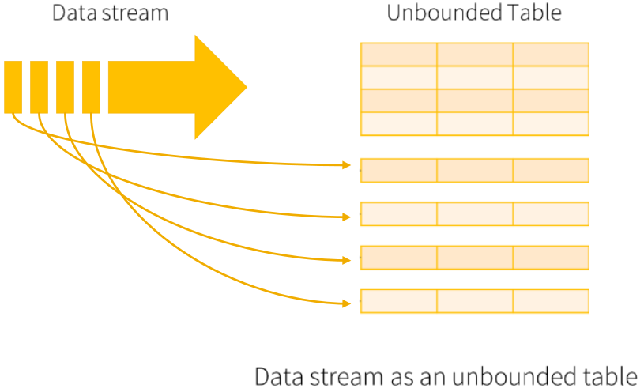
Queries
The expressed queries are incremental queries that are run incrementally on the unbounded input tables.
- The arrive of new data triggers the execution of the incremental queries
- The result of a query at a specific timestamp is the one obtained by running the query on all the data arrived until that timestamp (i.e., stateful queries are executed).
- Aggregation queries combine new data with the previous results to optimize the computation of the new results.
The queries can be executed
- As micro-batch queries with a fixed batch interval: this is the standard behavior, with exactly-once fault-tolerance guarantees
- As continuous queries: this is experimental behavior, with at-least-once fault-tolerance guarantees
In this example the (micro-batch) query is executed every 1 second
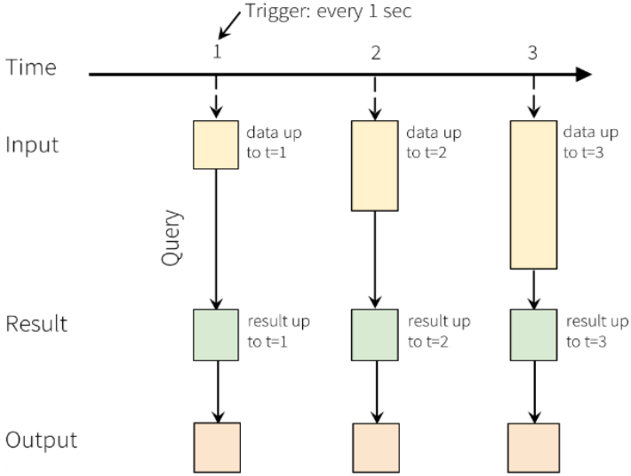
Note that every time the query is executed, all data received so far are considered.
- Input
- A stream of records retrieved from localhost:9999
- Each input record is a reading about the status of a station of a bike sharing system in a specific timestamp #- Each input reading has the format
stationId,# free slots,#used slots,timestamp
- For each stationId, print on the standard output the total number of received input readings with a number of free slots equal to 0
- Print the requested information when new data are received by using the micro-batch processing mode
- Suppose the batch-duration is set to 2 seconds
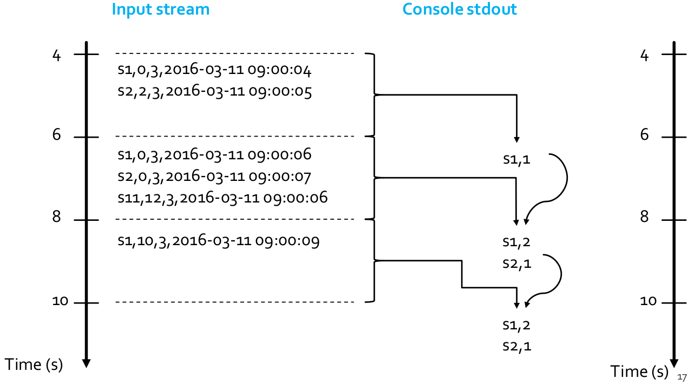
Key concepts
- Input sources
- Transformations
- Outputs
- External destinations/sinks
- Output Modes
- Query run/execution
- Triggers
Input sources
- File source
- Reads files written in a directory as a stream of data
- Each line of the input file is an input record
- Supported file formats are text, csv, json, orc, parquet, …
- Kafka source
- Reads data from Kafka
- Each Kafka message is one input record
- Socket source (for debugging purposes)
- Reads UTF8 text data from a socket connection
- This type of source does not provide end-to-end fault-tolerance guarantees
- Rate source (for debugging purposes)
- Generates data at the specified number of rows per second
- Each generated row contains a timestamp and value of type long
The readStream property of the SparkSession class is used to create DataStreamReaders: the methods format() and option() of the DataStreamReader class are used to specify the input streams (e.g., type, location). The method load() of the DataStreamReader class is used to return DataFrames associated with the input data streams.
Transformations
Transformations are the same of DataFrames, however there are restrictions on some types of queries/transformations that cannot be executed incrementally.
Unsupported operations:
- Multiple streaming aggregations (i.e. a chain of aggregations on a streaming DataFrame)
- Limit and take first N rows
- Distinct operations
- Sorting operations are supported on streaming DataFrames only after an aggregation and in complete output mode
- Few types of outer joins on streaming DataFrames are not supported
Outputs
- Sinks: they are instances of the class DataStreamWriter and are used to specify the external destinations and store the results in the external destinations
- File sink: it stores the output to a directory; supported file formats are text, csv, json, orc, parquet, …
- Kafka sink: it stores the output to one or more topics in Kafka
- Foreach sink: it runs arbitrary computation on the output records
- Console sink (for debugging purposes): it prints the computed output to the console every time a new batch of records has been analyzed; this should be used for debugging purposes on low data volumes as the entire output is collected and stored in the driver’s memory after each computation
- Memory sink (for debugging purposes): the output is stored in memory as an in-memory table; this should be used for debugging purposes on low data volumes as the entire output is collected and stored in the driver’s memory
Output mods
We must define how we want Spark to write output data in the external destinations. The supported output modes depend on the query type, and the possible output mods are the following
Append
This is the default mode. Only the new rows added to the computed result since the last trigger (computation) will be outputted. This mode is supported for only those queries where rows added to the result is never going to change: this mode guarantees that each row will be output only once. So, the supported queries are only select, filter, map, flatMap, filter, join, etc.
Complete
The whole computed result will be outputted to the sink after every trigger (computation). This mode is supported for aggregation queries.
Update
Only the rows in the computed result that were updated since the last trigger (computation) will be outputted.
The complete list of supported output modes for each query type is available in the Apache Spark documentation.
Code
The writeStream property of the SparkSession class is used to create DataStreamWriters. The methods outputMode(), format(), and option() of the DataStreamWriter class are used to specify the output destination (data format, location, output mode, etc.).
Query run/execution
To start executing the defined queries/structured streaming applications you must explicitly invoke the start() action on the defined sinks (DataStreamWriter objects associated with the external destinations in which the results will be stored). It is possible to start several queries in the same application, and structured streaming queries run forever (they must be explicitly stop/kill).
Triggers
For each Spark structured streaming query it is possible to specify when new input data must be processed, and whether the query is going to be executed as a micro-batch query with a fixed batch interval or as a continuous processing query (experimental). The trigger type for each query is specified by means of the trigger() method of the DataStreamWriter class.
Trigger types
No trigger type is explicitly specified, by default the query will be executed in micro-batch mode, where each micro-batch is generated and processed as soon as the previous micro-batch has been processed.
Fixed interval micro-batches
The query will be executed in micro-batch mode. Micro-batches will be processed at the user-specified intervals: the parameter processingTime of the trigger method() is used to specify the micro-batch size, and, if the previous micro-batch completes within its interval, then the engine will wait until the interval is over before processing the next micro-batch; if the previous micro-batch takes longer than the interval to complete (i.e. if an interval boundary is missed), then the next micro-batch will start as soon as the previous one completes.
One-time micro-batch
The query will be executed in micro-batch mode, but the query will be executed only one time on one single micro-batch containing all the available data of the input stream; after the single execution the query stops on its own. This trigger type is useful when the goal is to periodically spin up a cluster, process everything that is available since the last period, and then shutdown the cluster. In some case, this may lead to significant cost savings.
Continuous with fixed checkpoint interval (experimental)
The query will be executed in the new low-latency, continuous processing mode. It offers at-least-once fault-tolerance guarantees.
Spark structured streaming examples
Example 1
- Input
- A stream of records retrieved from localhost:9999
- Each input record is a reading about the status of a station of a bike sharing system in a specific timestamp #- Each input reading has the format: “stationId”, “# free slots”, “#used slots”, “timestamp”
- Output
- For each input reading with a number of free slots equal to 0 print on the standard output the value of stationId and timestamp
- Use the standard micro-batch processing mode
from pyspark.sql.types import *
from pyspark.sql.functions import split
## Create a "receiver" DataFrame that will connect to localhost:9999
recordsDF = spark.readStream \
.format("socket") \
.option("host", "localhost") \
.option("port", 9999) \
.load()
## The input records are characterized by one single column called value
## of type string
## Example of an input record: s1,0,3,2016-03-11 09:00:04
## Define four more columns by splitting the input column value
## New columns:
## - stationId
## - freeslots
## - usedslots
## - timestamp
readingsDF = recordsDF \
.withColumn("stationId", split(recordsDF.value, ',')[0].cast("string")) \
.withColumn("freeslots", split(recordsDF.value, ',')[1].cast("integer")) \
.withColumn("usedslots", split(recordsDF.value, ',')[2].cast("integer")) \
.withColumn("timestamp", split(recordsDF.value, ',')[3].cast("timestamp"))
## Filter data
## Use the standard filter transformation
fullReadingsDF = readingsDF.filter("freeslots=0")
## Select stationid and timestamp
## Use the standard select transformation
stationIdTimestampDF = fullReadingsDF.select("stationId", "timestamp")
## The result of the structured streaming query will be stored/printed on
## the console "sink“.
## append output mode
queryFilterStreamWriter = stationIdTimestampDF \
.writeStream \
.outputMode("append") \
.format("console")
## Start the execution of the query (it will be executed until it is explicitly stopped)
queryFilter = queryFilterStreamWriter.start()- 1
-
withColumn()is used to add new columns (it is a standard DataFrame method). It returns a DataFrame with the same columns of the input DataFrame and the new defined column. For each new column it is possible to specify name (e.g. “stationId”) and the SQL function that is used to define its value in each record. Thecast()method is used to specify the data type of each defined column. - 2
-
filterandselectare standard DataFrame transformations
Example 2
- Input
- A stream of records retrieved from localhost:9999
- Each input record is a reading about the status of a station of
- bike sharing system in a specific timestamp #- Each input reading has the format: “stationId”, “# free slots”, “#used slots”, “timestamp”
- Output
- For each stationId, print on the standard output the total number of received input readings with a number of free slots equal to 0
- Print the requested information when new data are received by using the standard micro-batch processing mode
from pyspark.sql.types import *
from pyspark.sql.functions import split
## Create a "receiver" DataFrame that will connect to localhost:9999
recordsDF = spark.readStream \
.format("socket") \
.option("host", "localhost") \
.option("port", 9999) \
.load()
## The input records are characterized by one single column called value
## of type string
## Example of an input record: s1,0,3,2016-03-11 09:00:04
## Define four more columns by splitting the input column value
## New columns:
## - stationId
## - freeslots
## - usedslots
## - timestamp
readingsDF = recordsDF \
.withColumn("stationId", split(recordsDF.value, ',')[0].cast("string")) \
.withColumn("freeslots", split(recordsDF.value, ',')[1].cast("integer")) \
.withColumn("usedslots", split(recordsDF.value, ',')[2].cast("integer")) \
.withColumn("timestamp", split(recordsDF.value, ',')[3].cast("timestamp"))
## Filter data
## Use the standard filter transformation
fullReadingsDF = readingsDF.filter("freeslots=0")
## Count the number of readings with a number of free slots equal to 0
## for each stationId
## The standard groupBy method is used
countsDF = fullReadingsDF \
.groupBy("stationId") \
.agg({"*":"count"})
## The result of the structured streaming query will be stored/printed on
## the console "sink"
## complete output mode
## (append mode cannot be used for aggregation queries)
queryCountStreamWriter = countsDF \
.writeStream \
.outputMode("complete") \
.format("console")
## Start the execution of the query (it will be executed until it is explicitly stopped)
queryCount = queryCountStreamWriter.start()- 1
-
groupByandaggare standard DataFrame transformations
Event time and window operations
Input streaming records are usually characterized by a time information: it is usually called event-time, and it is the time when the data was generated. For many applications, you want to operate by taking into consideration the event-time and windows containing data associated with the same event-time range.
Compute the number of events generated by each monitored IoT device every minute based on the event-time. For each window associated with one distinct minute, consider only the data with an event-time inside that minute/window and compute the number of events for each IoT device: one computation for each minute/window. You want to use the time when the data was generated (i.e., the event-time) rather than the time Spark receives them.
Spark allows defining windows based on the time-event input column, and then apply aggregation functions over each window.
For each structured streaming query on which you want to apply a window computation you must specify
- the name of the time-event column in the input (streaming) DataFrame
- the characteristics of the (sliding) windows
windowDurationslideDuration
Do not set it if you want non-overlapped windows, (i.e., if you want to a slideDuration equal to windowDuration). You can set different window characteristics for each query of your application.
The window(timeColumn, windowDuration, slideDuration=None) function is used inside the standard groupBy() one to specify the characteristics of the windows. Notice that windows can be used only with queries that are applying aggregation functions.
Event time and window operations: example 1
- Input
- A stream of records retrieved from localhost:9999
- Each input record is a reading about the status of a station of a bike sharing system in a specific timestamp #- Each input reading has the format: “stationId”, “# free slots”, “#used slots”, “timestamp”
- timestamp is the event-time column
- Output
- For each stationId, print on the standard output the total number of received input readings with a number of free slots equal to 0 in each window
- The query is executed for each window
- Set
windowDurationto 2 seconds and noslideDuration(i.e., non-overlapped windows)
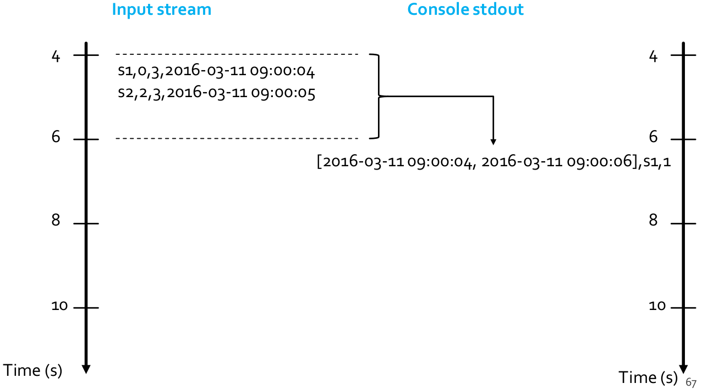
The returned result has a column called window. It contains the time slot associated with the window \([\text{from timestamp}, \text{to timestamp})\)
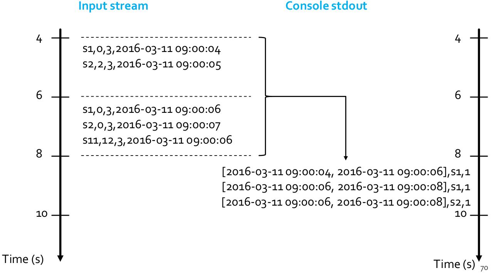
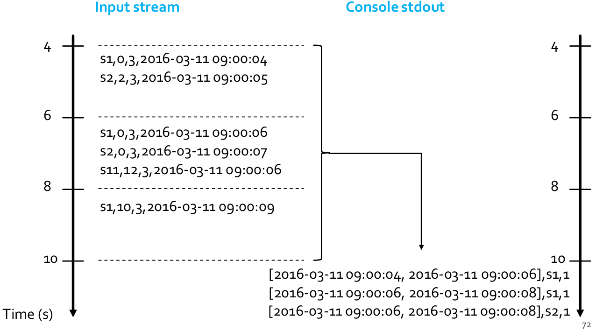
from pyspark.sql.types import *
from pyspark.sql.functions import split
from pyspark.sql.functions import window
## Create a "receiver" DataFrame that will connect to localhost:9999
recordsDF = spark.readStream \
.format("socket") \
.option("host", "localhost") \
.option("port", 9999) \
.load()
## The input records are characterized by one single column called value
## of type string
## Example of an input record: s1,0,3,2016-03-11 09:00:04
## Define four more columns by splitting the input column value
## New columns:
## - stationId
## - freeslots
## - usedslots
## - timestamp
readingsDF = recordsDF \
.withColumn("stationId", split(recordsDF.value, ',')[0].cast("string")) \
.withColumn("freeslots", split(recordsDF.value, ',')[1].cast("integer")) \
.withColumn("usedslots", split(recordsDF.value, ',')[2].cast("integer")) \
.withColumn("timestamp", split(recordsDF.value, ',')[3].cast("timestamp"))
## Filter data
## Use the standard filter transformation
fullReadingsDF = readingsDF.filter("freeslots=0")
## Count the number of readings with a number of free slots equal to 0
## for each stationId in each window.
## windowDuration = 2 seconds
## no overlapping windows
countsDF = fullReadingsDF \
.groupBy(window(fullReadingsDF.timestamp, "2 seconds"), "stationId") \
.agg({"*":"count"}) \
.sort("window")
## The result of the structured streaming query will be stored/printed on
## the console "sink"
## complete output mode
## (append mode cannot be used for aggregation queries)
queryCountWindowStreamWriter = countsDF \
.writeStream \
.outputMode("complete") \
.format("console") \
.option("truncate", "false")
## Start the execution of the query (it will be executed until it is explicitly stopped)
queryCountWindow = queryCountWindowStreamWriter.start()Late data
Sparks handles data that have arrived later than expected based on its event-time; these are called late data. Spark has full control over updating old aggregates when there are late data: every time new data are processed the result is computed by combining old aggregate values and the new data by considering the event-time column instead of the time Spark receives the data.
Late data example
- Input
- A stream of records retrieved from localhost:9999
- Each input record is a reading about the status of a station of a bike sharing system in a specific timestamp #- Each input reading has the format: “stationId”, “# free slots”, “#used slots”, “timestamp”
- timestamp is the event-time column
- Output
- For each stationId, print on the standard output the total number of received input readings with a number of free slots equal to 0 in each window
- The query is executed for each window
- Set
windowDurationto 2 seconds and noslideDuration(i.e., non-overlapped windows)
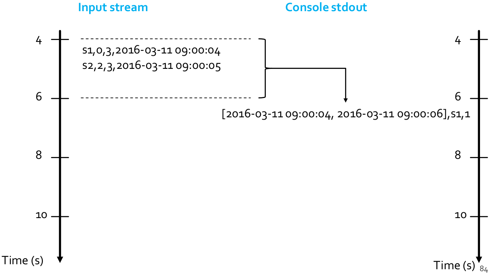
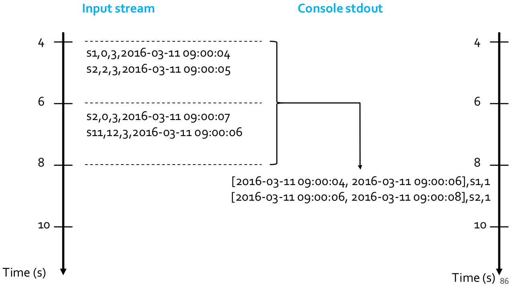
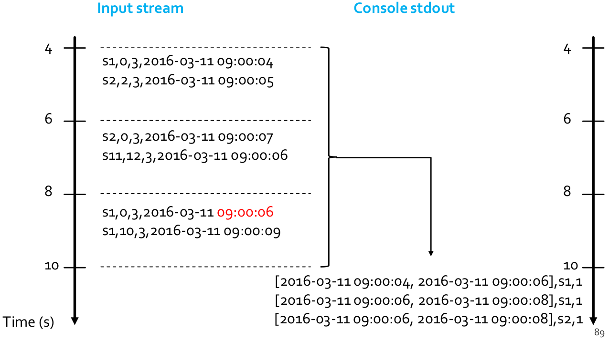
Notice that late data that was generated at 2016-03-11 09:00:06, but arrived at 2016-03-11 09:00:08: the result consider also late data and assign them to the right window by considering the event-time information.
The code is the same of the previous example (Event time and window operations: example 1): late data are automatically handled by Spark.
Event time and window operations: example 2
- Input
- A stream of records retrieved from localhost:9999
- Each input record is a reading about the status of a station of a bike sharing system in a specific timestamp #- Each input reading has the format: “stationId”, “# free slots”, “#used slots”, “timestamp”
- timestamp is the event-time column
- Output
- For each window, print on the standard output the total number of received input readings with a number of free slots equal to 0
- The query is executed for each window
- Set windowDuration to 2 seconds and no slideDuration (i.e., non-overlapped windows)
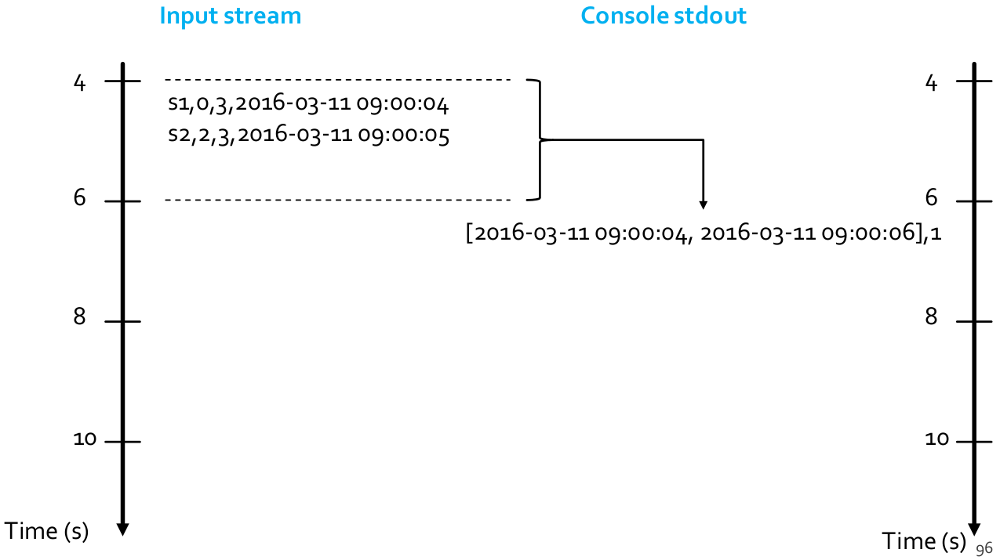
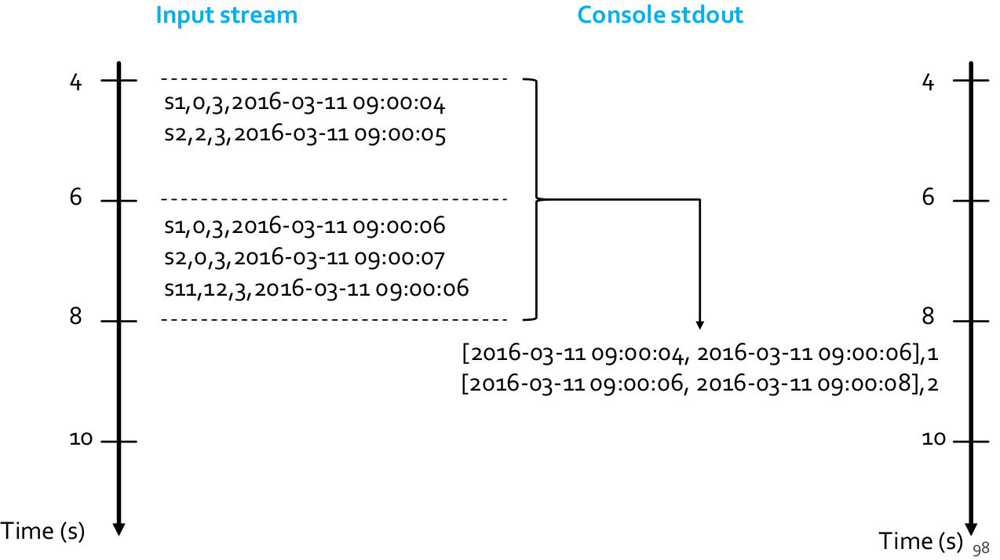
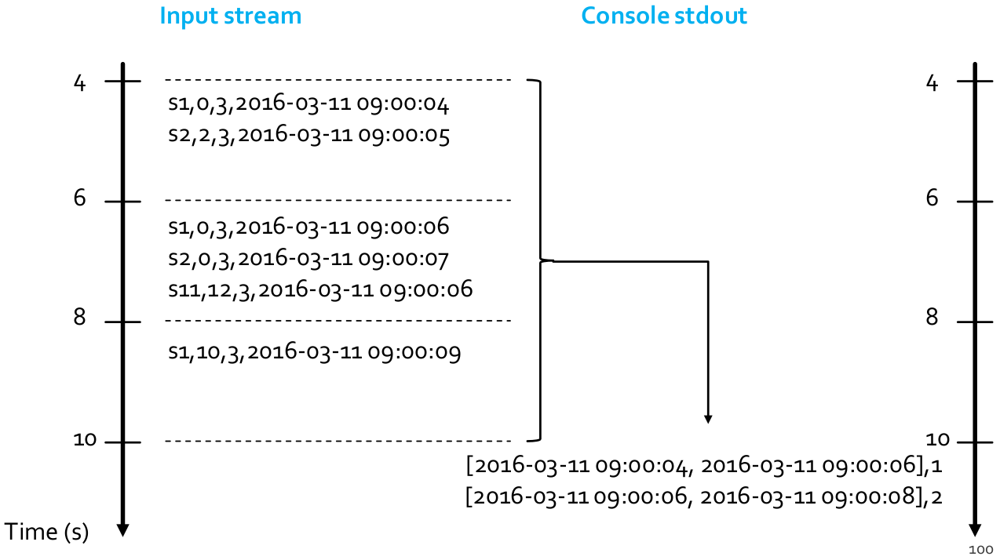
from pyspark.sql.types import *
from pyspark.sql.functions import split
from pyspark.sql.functions import window
## Create a "receiver" DataFrame that will connect to localhost:9999
recordsDF = spark.readStream \
.format("socket") \
.option("host", "localhost") \
.option("port", 9999) \
.load()
## The input records are characterized by one single column called value
## of type string
## Example of an input record: s1,0,3,2016-03-11 09:00:04
## Define four more columns by splitting the input column value
## New columns:
## - stationId
## - freeslots
## - usedslots
## - timestamp
readingsDF = recordsDF \
.withColumn("stationId", split(recordsDF.value, ',')[0].cast("string")) \
.withColumn("freeslots", split(recordsDF.value, ',')[1].cast("integer")) \
.withColumn("usedslots", split(recordsDF.value, ',')[2].cast("integer")) \
.withColumn("timestamp", split(recordsDF.value, ',')[3].cast("timestamp"))
## Filter data
## Use the standard filter transformation
fullReadingsDF = readingsDF.filter("freeslots=0")
## Count the number of readings with a number of free slots equal to 0
## for in each window.
## windowDuration = 2 seconds
## no overlapping windows
countsDF = fullReadingsDF \
.groupBy(window(fullReadingsDF.timestamp, "2 seconds")) \
.agg({"*":"count"}) \
.sort("window")
## The result of the structured streaming query will be stored/printed on
## the console "sink"
## complete output mode
## (append mode cannot be used for aggregation queries)
queryCountWindowStreamWriter = countsDF \
.writeStream \
.outputMode("complete") \
.format("console") \
.option("truncate", "false")
## Start the execution of the query (it will be executed until it is
## explicitly stopped)
queryCountWindow = queryCountWindowStreamWriter.start()Watermarking
Watermarking is a feature of Spark that allows the user to specify the threshold of late data, and allows the engine to accordingly clean up old state. Results related to old event-times are not needed in many real streaming applications: they can be dropped to improve the efficiency of the application, since keeping the state of old results is resource expensive; in this way every time new data are processed only recent records are considered.
Specifically, to run windowed queries for days, it is necessary for the system to bound the amount of intermediate in-memory state it accumulates. This means the system needs to know when an old aggregate can be dropped from the in-memory state because the application is not going to receive late data for that aggregate any more; to enable this, in Spark 2.1, watermarking has been introduced.
Watermarking lets the Spark Structured Streaming engine automatically track the current event time in the data and attempt to clean up old state accordingly. It allows to define the watermark of a query by specifying the event time column and the threshold on how late the data is expected to be in terms of event time: for a specific window ending at time \(T\), the engine will maintain state and allow late data to update the state/the result until max event time seen by the engine \(< T + \text{late threshold}\). In other words, late data within the threshold will be aggregated, but data later than \({T + \text{threshold}}\) will be dropped.
Join operations
Spark Structured Streaming manages also join operations
- Between two streaming DataFrames
- Between a streaming DataFrame and a static DataFrame
The result of the streaming join is generated incrementally.
When joining between two streaming DataFrames, for both input streams, past input streaming data must be buffered/recorded in order to be able to match every future input record with past input data and accordingly generate joined results. Too many resources are needed for storing all the input data, hence, old data must be discarded. Watermark thresholds must be defined on both input streams such that the engine knows how delayed the input can be and drop old data.
The methods join() and withWatermark() are used to join streaming DataFrames: the join method is similar to the one available for static DataFrame.
from pyspark.sql.functions import expr
impressions = spark.readStream. ...
clicks = spark.readStream. ...
## Apply watermarks on event-time columns
impressionsWithWatermark = impressions \
.withWatermark("impressionTime", "2 hours")
clicksWithWatermark = clicks \
.withWatermark("clickTime", "3 hours")
## Join with event-time constraints
impressionsWithWatermark.join(
clicksWithWatermark,
expr(
"""
clickAdId = impressionAdId AND
clickTime >= impressionTime AND
clickTime <= impressionTime + interval 1 hour"""
)
)